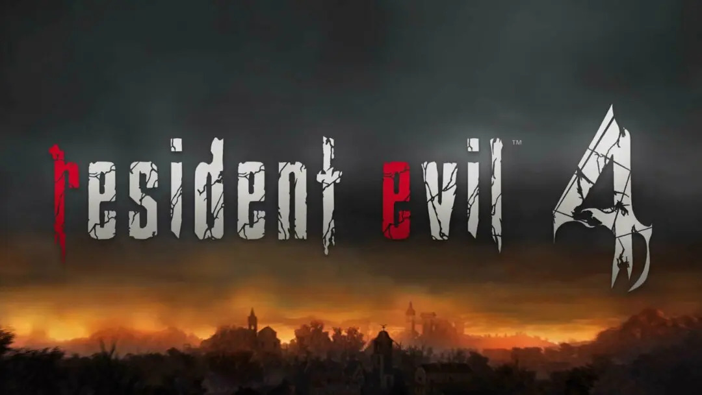

Prepare-se para reviver o clássico amado pelos fãs com Resident Evil 4 Remake no PlayStation 5! Este é o retorno de um jogo lendário que agora está com gráficos refeitos, jogabilidade atualizada e enredo reimaginado, mas sem perder a essência original que conquistou os jogadores há mais de 15 anos atrás.
Envolva-se em um combate frenético com os aldeões raivosos e explore uma vila europeia dominada pela loucura, enquanto resolve quebra-cabeças para acessar novas áreas e coletar itens úteis contra os diversos métodos de ataque dos inimigos, que estão ainda mais fortes que na versão original. Sinta a adrenalina constante enquanto acompanha a luta de Leon e Ashley pela sobrevivência.
Faça uso inteligente das facas e outras armas recuperadas para realizar movimentos fatais em inimigos vulneráveis e até mesmo usar o elemento de surpresa para despachar silenciosamente inimigos inocentes antes que suas facas quebrem. Mais recursos e poder de decisão estão à disposição do jogador, incluindo a compra e personalização de armas, além da troca de equipamentos com os personagens do jogo.
Resident Evil 4 oferece um visual sofisticado com fotorrealismo de tirar o fôlego, visuais renovados com iluminação deslumbrante e combinação de sombras para criar uma atmosfera intensa. Se você é um fã de longa data ou um novato na série, Resident Evil 4 Remake no PlayStation 5 é uma experiência que você não pode perder!